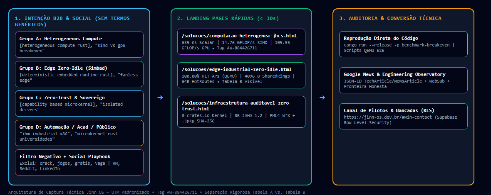
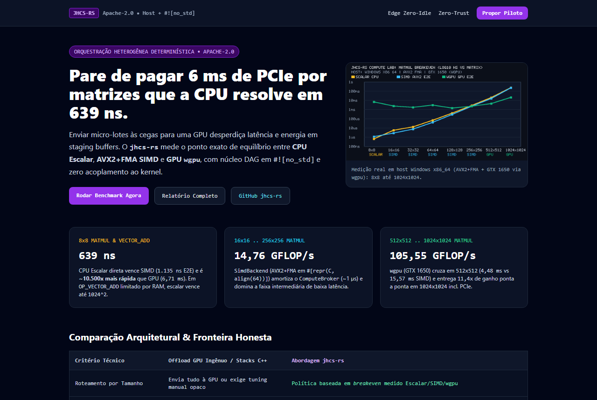
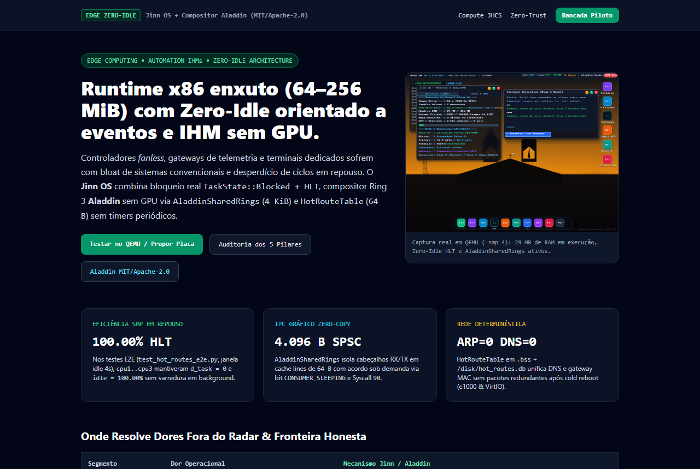
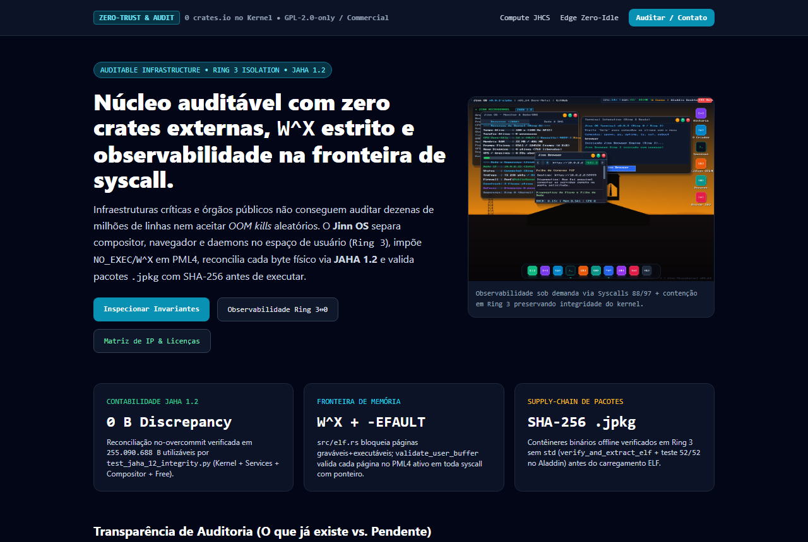

Arquitetura de Captura Técnica B2B/Deep Tech: Google Ads de Alta Precisão, Landing Pages /solucoes/ e Kit Social
Visibilidade internacional em engenharia não nasce de anúncios amplos nem de slogans genéricos. Projetamos uma arquitetura enxuta que conecta buscas técnicas exatas (Google Ads AW-884426711 e comunidades como Hacker News, Reddit r/rust/r/osdev, X e LinkedIn) diretamente a páginas de diagnóstico rápido (< 30s) ancoradas em código reproduzível, métricas reais e transparência da Tabela B.
1. Diagnóstico do Problema & Decisões de Engenharia de Captura
-
Desperdício em palavras amplas e portais genéricos: campanhas de tecnologia sem filtro exato e negativas acabam consumidas por cliques de suporte doméstico, jogos, downloads ou vagas de emprego. Para evitar isso,
docs/strategy/GOOGLE_ADS_INTENT_MATRIX.mdrestringe todos os 4 Grupos de Anúncios a correspondência Exata ([...]) e de Frase ("..."), com 24 títulos/descrições validados programaticamente dentro dos limites de 30 e 90 caracteres, URLs com UTM padronizado e uma lista mestra de negativas bloqueando tráfego não-técnico. -
Fricção de interpretação para visitantes técnicos: enviar um engenheiro de performance ou automação direto para uma landing institucional exige minutos para descobrir o que já funciona. Cada página em
web/solucoes/*.htmlresponde em menos de 30 segundos: Qual dor resolve → Métrica verificada → Comparação arquitetural + Tabela B → Comando CLI / canal de piloto. -
Indexação e deep-link de contato seguro: atualizamos
web/build_feed.pypara incluir automaticamenteweb/solucoes/*.htmlnositemap.xmle validamos o deep-link/#win-contactemweb/app.js(abrindo o formulário protegido por RLS no Supabase). Emdocs/strategy/SOCIAL_SYNDICATION_PLAYBOOK.md, criamos templates sem tom promocional em Português e Inglês voltados à cultura der/osdev,r/rust, Show HN, X e LinkedIn.
2. Evidências Visuais Reais da Arquitetura e das 3 Landing Pages

/solucoes/ → Reprodução de código, Google News e canal RLS /#win-contact).

/solucoes/computacao-heterogenea-jhcs.html destacando breakeven real Escalar (`639 ns`), AVX2 (`14,76 GF/s`) e wgpu (`105,55 GF/s`).

/solucoes/edge-industrial-zero-idle.html com evidências QEMU (`100.00% HLT` em APs, 4096 B SPSC, ARP=0 DNS=0) e Radar Regional.

/solucoes/infraestrutura-auditavel-zero-trust.html com invariante JAHA 1.2 (`0 B discrepancy`), W^X e verificação .jpkg SHA-256.
3. Aplicabilidade Prática por Cenário
Usos Industriais (Edge Computing, Automação & Hardware Fanless)
O Grupo B e a página edge-industrial-zero-idle.html direcionam especificamente engenheiros de PLCs, IHMs zero-GPU e gateways fanless para testes verificáveis em hardware x86 de 64–256 MiB, sem misturar buscas industriais com software consumidor.
Usos Domésticos (Eficiência, Navegação Isolada & Reuso Sustentável)
Embora o Google Ads bloqueie tráfego doméstico genérico para preservar orçamento, a trilha orgânica e os artigos do Observatory demonstram como o compositor Ring 3 Aladdin e o navegador leve estendem a vida útil de hardware antigo sem telemetria oculta.
Usos em Servidores (Densidade, Zero-Trust & Processamento Heterogêneo JHCS)
Os Grupos A e C conectam arquitetos de backend/HPC e segurança ao crate Apache-2.0 jhcs-rs (para evitar gargalos de despacho em micro-lotes GPU) e às provas de isolamento W^X/JAHA 1.2/0 crates.io no microkernel.
4. Melhorias, Métricas Futuras & Limitações
As páginas estáticas em /solucoes/ dependem atualmente do carregamento de Tailwind CDN em rede aberta e ainda exigem acompanhamento semanal real dos termos de pesquisa no painel Google Ads (após ativação paga) para calibrar lances CPC e registrar eventos customizados de conversão por clique em /#win-contact e cópia do comando cargo run --release -p benchmark-breakeven.
Jinn Engineering Observatory • Open Collaboration
Applicable Ecosystems & Open Collaboration
Conexões arquiteturais deste estudo com domínios industriais, pesquisa científica e infraestrutura auditável:
Chamada Aberta: Indústria Local, Academia & Setor Público Eticamente Responsável
Convidamos empresas regionais de automação industrial e integradores, universidades e grupos de pesquisa em sistemas operacionais e projetos públicos/governamentais eticamente responsáveis (com transparência e código auditável) a reproduzirem estes experimentos em bancada física, propor workloads comparativos ou avaliar pilotos com o Jinn OS e o JHCS.
![[Valid RSS]](/valid-rss-rogers.png "Validate my RSS feed")